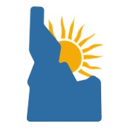

Site Name: Sun Idaho
Site URL: sunidaho.com
This name and url represents the happy identity that we want associated with our company and site.
Site Logo:
Site Purpose:
The main puropse of sunidaho.com is to provide current information about the weather and realted content to the citizens in the south east areas of Idaho. This objective will be fulfilled through individual pages for each location, desciprions and pictures of the current weather conditions, and other important updates and announcments.
The secondary purpose of the site is to create a sense of community in these areas. The site will provide a warm and welcoming atmosphere to provide positive refelction on the community. One goal for this website is for it to become a centerpoint of the district.